Next: 3. Diagram Editing
Up: Toolkit for Conceptual Modeling
Previous: 1. Introduction
Subsections
2. Document Editing
This chapter describes the features common to all the TCM editors.
This includes most of the user interface components, loading documents,
saving documents, printing documents and the on-line help.
Figure 2.1:
TCM main window.
|
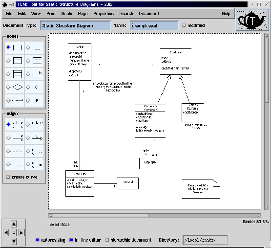 |
When you start up an editor, you will see the so-called main window.
For a screen dump of the main window see
figure 2.1.
TCM needs in principle a 3-button mouse. The left and middle buttons are
the most essential for drawing nodes and edges and the right button is
only used for a pop-up menu. However, pressing or dragging with the left
mouse button while you are pressing the Shift key has the same effect as
pressing or dragging the middle button. This means that you can use TCM
as well with a 2-button mouse. Instead of button-2, you use Shift+button-1.
Another solution is to change the function of the right and middle mouse
button with: xmodmap -e "pointer = 1 3 2". If you're using a so-called
5-button mouse (IntelliMouse with wheel-button),
you can change the function of the right and middle mouse button with:
xmodmap -e "pointer = 1 3 2 4 5".
In this manual the mouse buttons are called from left to right: button-1,
button-2 and button-3 (or from right to left, if you have a
special left-hand adjusted mouse). We almost never mention button-3 because
button-3 is only used for popping up the Edit pop-up menu in the drawing
area, whereas the same menu is also accessible via the menu bar.
Except the basic drawing commands in the drawing area, all parts
of the user interface can be accessed by keystrokes as well as
by mouse operations. This manual assumes that you are using
the mouse as much as possible.
2.1.1 Tiled buttons.
On the left edge of the main window of the diagram and tree editors
there are two sets of tiled buttons containing a bitmap symbol.
These contain two kinds of toggle buttons: radio buttons and check buttons.
Radio buttons are a set of mutually exclusive selection options.
The visual cue is a little diamond that is filled or unfilled.
A check button is a non-mutually exclusive selection option.
The visual cue is a little box that is filled or unfilled.
When you pass the mouse pointer over a tiled button for a second or two,
a one line bubble help clue is popped up giving the
full name of what the tile represents.
2.1.2 Menu bar.
The menu bar located under the main window's title bar organizes most
of the commands and features of the editors.
The menu bar works in a straightforward way: press button-1
on an entry and keep it pressed down. A pull-down menu appears. Drag
the mouse to the desired command and then release button-1.
The menu is dismissed and the command is
executed. Some menus contain nested submenus, called cascading menus,
that work in a similar way.
You cancel a menu by moving somewhere outside the menu and then
releasing button-1.
Some frequently used commands can also be called directly, without going
through a menu, by means of a keystroke shortcut, called
an accelerator.
For example <Ctrl+L> is an accelerator for loading a document
from file. You can see in the text of the menu entries which
commands have an accelerator.
Some menu entries contain check buttons that indicate
that a certain property of the editor is switched on or off.
If you select this entry, the value of the property will be inverted.
See for example the Show Page Boundary entry in the Page menu.
Some other menu entries contain a submenu of radio buttons
indicating that a certain editor property has a value
that is one from a set of menu choices. Try for example the
Page Size entry in the Page menu.
2.1.3 Drawing area.
The drawing area, also called pane or canvas, is used
to create, edit and delete the graphical items of your document
by using the mouse. The mouse operations that are distinguished
by TCM are summarized in figure 2.2.
Figure 2.2:
Mouse operations.
|
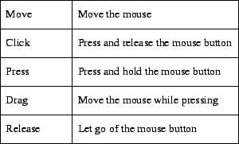 |
The whole drawing area is larger than the main window. You can use the
scroll bars on the right and bottom side of the drawing area to view the
drawing area that requires more space than is available at any one time.
By resizing the main window you can resize the visible part of the drawing area,
keeping the other parts of the main window the same size as
much as possible.
TCM has its own coordinate system. By default, the TCM coordinates
have the same distance as the coordinates of X Windows.
The origin is in the top left corner of the drawing area.
Like the X Window coordinates, the x-coordinates increase from left to
right and the y-coordinates increase from the top down.
By scaling the ratio between the TCM and X Window coordinates
can be updated.
2.1.4 Document Type.
This is visible as an uneditable text field
above the drawing area. See figure 2.3 for how the
document types are called.
This is visible as an editable text field
above the drawing area. See section 2.2 for how
to change the document name.
This is visible as a toggle above the drawing
area. When the document has been modified, but it is not saved yet,
it is on. If the toggle is on and you have loaded or created
a new document, TCM warns you that the old document will
be lost, and you get the opportunity to save the old document first.
The result of the last issued command is displayed
below the drawing area in an unshaded and uneditable text field.
The name of the project or working directory
is visible in an editable text field at the bottom of the main window
right below the status area. See section 2.3 for
how to change the project directory.
The current scale percentage is shown
in the bottom-right corner. By performing the scaling
commands of the Scale menu, this value is updated.
2.1.10 Autoresizing.
This is visible as a toggle beneath the
status area. When it is on, the shapes in the diagram or the cells
in the table are automatically resized to make it fit the text
that they contain (see section 2.5).
When it is off, you should resize the shapes and cells manually
to make them the right size.
This is visible as a toggle beneath the status
area next to the autoresize toggle. When it is on, text can be typed
directly into the drawing area. When it is off, text editing
takes place in a text edit dialog window (see section 2.5).
2.1.12 Hierarchic document.
This is visible as a toggle beneath the status area, next to the In-line editor toggle.
When it is on, the current document is hierarchic,
i.e., nodes in this document can be hierarchically related.
This toggle is only relevant for hierarchic editors
(most diagram editors allow hierarchic documents).
2.1.13 Arrow Buttons.
In the bottom-left corner of the main window
there are four arrow shaped buttons by which you can move the
entire document over the drawing area. Amidst these four buttons there
is a button labeled C, by which you can center the drawing
on the first page in the drawing area, at least when the drawing
is not larger than a single page. When the drawing is larger than
one page, the drawing will be centered on the set of pages
that the drawing occupies.
Figure 2.3:
Document editors, document types and document name suffixes.
|
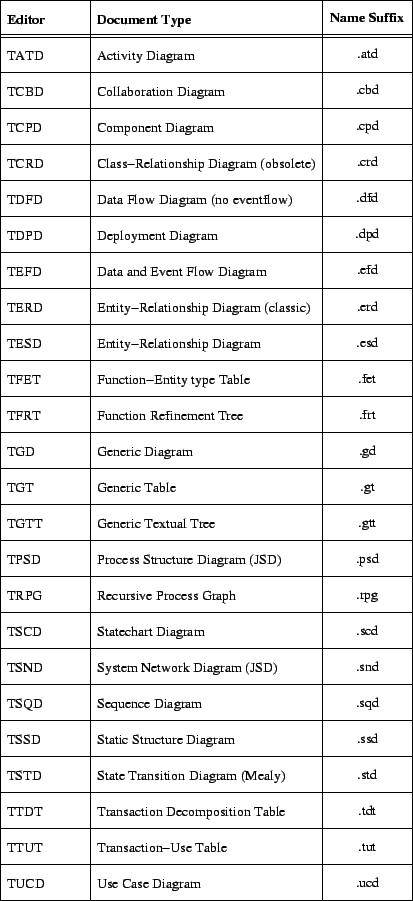 |
2.2 Changing the Document Name
You can type in a new name in the document name text field above the
drawing area. When you enter <Return>, the document name is changed.
TCM checks whether the name has a valid suffix
for the current type of document. See figure 2.3
for the required suffixes. Furthermore, the document name should contain
only non-white space printable characters and it should not contain
the characters {, } or /.
When a document is loaded, the document name field is set to the
name of that document. If a new document is created, either by starting
the editor without a file name or by issuing the New command,
the newly created document will receive the default
name untitled.
2.3 Changing the Project Directory
You can change the project (working) directory with the
Project Directory entry in the File menu
of the TCM startup window (see figure 1.2).
You can also change the project (working) directory by editing the
directory text field at the bottom of the main window. You can change it
by editing it and entering <Return>. TCM checks if the
directory exists and if it is accessible.
This directory is intended for storing the files related to
the current (sub)project that you are working on.
It is used as the starting directory for the file
selection dialogs for loading and saving documents.
You can instantly start a TCM editor with a specific document
via the Open Document entry in the File menu
of the TCM startup window (see figure 1.2).
The Open Document dialog is simular to the Load Document
dialog described below.
Selecting a TCM document will result in starting the TCM editor
associated with the document extension. For example selecting a .ucd
document will launch the TUCD (Use Case Diagram) Editor with the
designated document loaded.
Figure 2.4:
TCM File selection dialog.
|
|
The File pull-down menu of the TCM editors contains the following
entries:
- New (<Ctrl+N>). Creates a new document
called untitled.xxx.
Where xxx is the suffix for the specific editor
(figure 2.3).
You can change the name of the new document in the document
name text field.
Before the new document is created, the current document
that was being edited is deleted from the editor.
If your current document is modified, TCM asks you if you want to save
the document.
Unless you have saved this document, the old document
cannot be restored.
- Load (<Ctrl+L>).
Pops up a file selection dialog to
select the external file name for loading a document from file
(figure 2.4). Before the document is loaded,
the current document that was being edited is deleted
from the editor.
- Append (<Ctrl+A>).
Pops up a file selection dialog to
select the external file name for merging the current document
with another one from a file.
Diagrams that are appended, can be positioned at an
arbitrary place in the drawing area by means of a paste box,
that works like the Paste command from the Edit menu
(see section 3.9). Because appending is
implemented as a Paste command, appending a document can
be undone with Undo or be repeated by issuing the Paste
command again.
Tables can be appended either below or to the right of
the current table. This is determined by an option menu
in the append table file selection dialog.
In both cases, the original table stays the same but
new rows are added to the bottom and/or new columns are
added to the right of the table. Append table has an Undo too.
- Save. Saves the document
to an external file. If the document name is still untitled,
a file selection dialog pops up, like Save As. Otherwise the
document is immediately saved in the file
document-name.suffix in the project directory.
When you attempt to overwrite an existing file, TCM gives
a warning and you can cancel your action.
- Save As (<Ctrl+S>). Pops up a file selection
dialog to select or
type in the file name to save
the document to. After clicking OK, it acts the same as Save.
- Save Selection As. Pops up a file selection
dialog to select or
type in the file name to save the selected part of the document to.
In diagram editors the selected shapes and the corresponding part of
the graph is saved to file. In table editors the rows and columns that
contain one or more selected cells are saved.
- Quit (<Ctrl+Q>). Quits TCM. If your current
document is modified, TCM asks you if you want to save
the document. Of course, you can also quit the editor
by sending it a kill signal or by deleting the main window.
The file selection dialog (figure 2.4) allows you
to select a file in the right side listing or to navigate
through the file system by selecting a directory, including the parent
directory (..), in the left side listing.
You can select a file or directory by either: 1. quickly double clicking
on an entry, 2. single clicking on an entry and clicking OK or
3. filling in the field labeled Selection and clicking OK.
The Filter field on top determines which file names are displayed.
You can edit the filter setting, which takes effect after clicking the
Filter button.
When you change directory in the load or save to file
dialog then the directory field in the main window
is updated to that directory
after that you dismissed the dialog. So with the load or save
to file dialog you can browse through the file system and the latest
visited directory is always remembered in the directory text field.
The export dialog from the Print menu also remembers its
last visited directory but independently from the directory
from the load or save to file dialog.
2.5 Editing Documents
There are two types of document edit commands: commands that are
issued by the mouse, when the mouse pointer is in the drawing area, and the
commands listed in the Edit menu. All diagram and tree editors
share the same set of edit commands (chapter 3).
All table editors share the same set of edit commands too
(chapter 7). However, the edit commands of diagram
and tree editors on one hand and table editors differ to a large extent.
All document edit commands, except the simple selection commands and
the key-stroke text edit commands are undo-able and redo-able (multiple levels).
All editors have certain commands to select items, to move and
resize items, to edit the text of items, to add items and to
delete items. Only the text edit commands are very similar across
all editors and therefore they are described in this chapter.
For the other commands you are referred to chapter 3
(diagrams and trees) and chapter 7 (tables).
2.5.1 Editing Text in a Document
In order to be able to type in a label of a shape in a diagram or
the text in a table cell, the shape or cell should be the only currently
selected shape or cell. For going into edit mode you can do the following.
Move the mouse pointer into the single selected shape or cell,
and when the mouse pointer has turned into a
 ,
you can start editing by typing characters or by clicking button-1 again.
In both cases the edit mode starts.
,
you can start editing by typing characters or by clicking button-1 again.
In both cases the edit mode starts.
There are two edit modes: in-line editing and out-line editing.
In-line editing takes place directly in the drawing area and during in-line
editing a black triangle shaped cursor is visible. Out-line editing takes place in
a separate window with a text editor that is popped up when the edit mode
is entered. That window contains an editable Motif text entry area,
a menu bar, scroll bars and two buttons: OK and Cancel.
You can indicate which of the two possible edit modes has to be used
by a toggle button labeled in-line editor. That toggle is near
the bottom of the main window and it is also accessible via the View menu.
In general, in-line editing is more suitable for quickly editing
short labels, whereas out-line editing has scroll bars and some extra
edit operations and is more suitable for editing large chunks of texts.
With out-line editing it is also possible to cut and paste text
within and between text edit windows.
Here we summarize all operations that are available in the
in-line editor.
2.5.3 The Text Edit Dialog
Text edit dialogs are almost complete text editors, see figure 2.5.
Text edit dialogs are not only used for out-line editing text labels
but also for editing document and subject annotations. The operations in
the dialog are
mostly standard Motif operations. Here we will summarize the most important
ones:
Figure 2.5:
TCM text edit dialog.
|
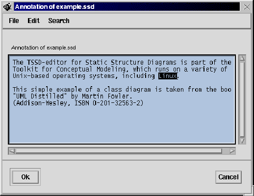 |
- Start editing. When you have popped up the text edit dialog
and the text area has the input focus then you can start editing.
A blinking I-beam insertion cursor indicates where text will be inserted.
- Stop editing. You leave the edit session by clicking
the OK button. The dialog is dismissed and the text (a shape label,
an annotation, a cell text etc.) will be updated.
When the autoresize toggle is on, the shape or cell will
also be resized to make it fit the entire text.
When the text editor is used for out-line editing, you can undo the
update after you have clicked the OK button.
- Cancel editing. You cancel with the Cancel button.
When you have canceled, the dialog is dismissed and the text that was being
edited will not be updated. The modifications that you have made
in the window are lost.
- Add character after the cursor.
Type in the character. Labels may contain all printable ASCII characters,
except the <Tab>.
- Delete character after the cursor.
Use the <Delete> key.
- Delete character before the cursor.
Use the <BackSpace> key.
- Move cursor left.
Use the <ArrowLeft> key to move the cursor one character left.
- Move cursor right.
Use the <ArrowRight> key.
- Move cursor one line up.
Use the <ArrowUp> key.
- Move cursor one line down.
Use the <ArrowDown> key.
- Move cursor one page up.
Use the <PageUp> key.
- Move cursor one page down.
Use the <PageDown> key.
- Delete all (<Ctrl+D>).
Use the Delete All command in the edit menu or press <Ctrl+D> in the
text edit dialog. The <Escape> key cancels the dialog
which is a built-in feature of Motif. This is an important difference between
the in-line and the out-line editor.
- Move cursor to beginning of line.
<Home> moves the cursor in front of the first character of the current line.
- Move cursor to end of line.
<End> moves the cursor after the last character of the current line.
- Directly position the cursor.
You can click with button-1 on the desired cursor position.
If you want to change the cursor position without changing the
selection, press <Ctrl> while you click button-1.
- Select text.
You can select a part of the text by dragging with button-1 over the
region that you want to select; or when you click button-1 twice in a word
then the word is selected; or when you click thrice, the line is
selected; or when you click four times, the entire text
is selected. Selected text is highlighted in reverse video.
- Clear selection.
Click button1 anywhere outside the selected region.
- Copy (<Ctrl+C>).
Copy the selected text into the Motif clipboard.
Motif has a clipboard built-in which acts like a
cut-paste buffer for copying and moving text between text areas
of the same or different Motif applications.
- Cut (<Ctrl+X>).
Cut the selected text into the Motif clipboard.
This is like Copy but Cut deletes the selected portion
after copying it to the clipboard. Note that before you can cut
or copy, you have to select some text.
- Paste (<Ctrl+Y>).
Pastes the contents of the Motif clipboard into the text edit area.
The text is inserted at the current cursor position.
- Find (<Ctrl+F>).
This command pops up a prompt dialog (figure 2.6) for finding a text string
in the text edit area. The find text dialog has an input field to type
the text that you are looking for and it has a check button and four push
buttons that mean the following:
- case sensitive. This check button says that the case of the string to
find is significant. By default, Find (and Replace) are case insensitive.
- Find Next. Finds the next string that matches the string to find.
The insertion cursor of the edit area is put in front of the string that
is found and the scroll bars are adjusted if needed.
- Find All. Highlights all strings that matches the string
to find and the dialog says how many occurrences are found.
- Dismiss. Closes the dialog.
- Clear. Clears the text entry field for the string to find.
- Replace (<Ctrl+Z>).
This command pops up a prompt dialog (figure 2.7) for finding
and replacing text strings
in the text edit area. The replace text dialog has two input fields, one to type
the text that you are looking for and one to type the text that you want as
a replacement. The replace dialog has a check button and five push
buttons that mean the following:
- case sensitive. Same as in the Find dialog.
- Find Next. Same as in the Find dialog.
- Replace Next. The next string found after the insertion cursor is
replaced by the string to replace with. Before you do a Replace Next,
you can do a Find Next so that you see which string you replace.
Also note that the string to find should not be empty, but the
replacement string may be empty.
- Replace All. All strings that match the string to find are replaced
by the string to replace with (global substitution).
- Dismiss. Closes the dialog.
- Clear. Clears both text entry fields.
In the diagram and table editors the find dialog and the replace dialog
are also used for finding and replacing text in the entire diagram
or table. These operations are issued from the Find and Replace entries
in the Search menu of the main window (see section 2.11).
- Load (<Ctrl+L>).
This command shows a file selection dialog by means of which you
can select an arbitrary text file. When you press OK, the contents
of the file is loaded into the text editor. You can load any text
file of any size.
- Save as (<Ctrl+S>).
This command shows a file selection dialog for saving the contents of
the text editor to a file.
- Print (<Ctrl+P>).
This command directly sends the contents of the text editor to
the current printer. The text is first converted to PostScript and it
receives a header. At the moment it is only possible to directly
print text with the Print of this dialog in Helvetica font and
with point size 9. If you want the text printed differently, you
have to save it first to a file and then post-process it yourself for
instance with the program text2ps that is supplied together
with TCM (see man text2ps).
Figure 2.6:
TCM find dialog.
|
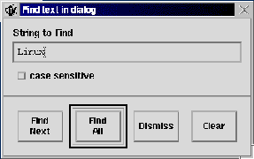 |
Figure 2.7:
TCM replace dialog.
|
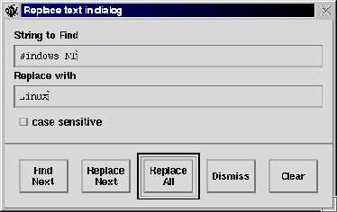 |
The View menu
contains certain commands that have to do with
how a document is viewed or how it can
be edited in the document itself. View commands do not actually
change something in the document. The Scale operations are in
a separate menu but these are view commands too (as opposed to edit
commands). The document editors have different
View menu entries, but all editors share at least the following View
menu commands:
-
The Refresh command (<Ctrl+V>) is the first entry in
the View menu. It redraws the contents of the drawing area. This
command can be needed when pixel droppings or left-overs occur in
the drawing area.
-
The Grid facilitates the alignment of the
shapes in the drawing
area. Only the diagram and tree editors have the Grid menu because
tables are aligned in a different way. The grid cannot be printed.
The options of the Grid menu are settings of the editor and
therefore they are not saved to file when a document is saved.
The Grid menu contains the following entries:
-
Show Grid. Draw or hide the grid in the drawing area.
The grid is visible as a raster of dashed vertical and horizontal
lines at an equal distance. This distance is called the grid size.
-
Grid Size. Set the size of the grid with a pop-up slider
dialog. The default grid size is 30 pixels.
-
Point Snapping. When point snapping is on, the
positions of the shapes are constrained to discrete positions at
a certain point distance. When point snapping is off, the
shapes can be placed at any position.
-
Point Distance. Set the point distance with a pop-up slider
dialog. The default is 10 pixels. The point distance is used when
point snapping is on. The grid size and the point distance
are independent from each other.
-
The Autoresizing toggle.
Turns Autoresizing on or off. Autoresizing means that shapes or cells of
a table adapt themselves automatically to fit the texts that they contain.
It also (re)sets its counterpart toggle in the main window.
-
The In-line editor toggle. Turns in-line editing on or off.
In-line editing means that text editing takes place directly in drawing area
whereas out-line editing means text editing takes place
in a separate text edit window (see section 2.5.1).
It also (re)sets its counterpart toggle in the main window.
The page layout determines how a document is sent to the
printer or saved as PostScript. See section 2.9
for the commands which determine the page layout. When a
document is printed or saved as PostScript, each page that
contains a part of the drawing is printed or saved.
The Print menu contains the following entries:
-
Print (<Ctrl+P>). You can send the drawing directly to
a PostScript printer with this command. When you have a printer
that can not print PostScript, this command will print a PostScript listing.
See the frequently asked questions for how to get a more valuable
result.
The default printer is the printer name in the
TCM configuration file $HOME/.tcmrc or
TCM_CONFIG/tcm.conf, whereby the options in the first
configuration file is user-specific and overrides the options in
the latter, system wide, configuration file.
When this variable is not set, the printer will be set to
the value of the PRINTER environment variable.
In the Printer Properties submenu you can see and modify
the printer settings that are used and in the Page menu you can change the
page layout. In general, the drawing is printed exactly as it is displayed in
the drawing area. For seeing what is exactly sent to the printer
you can issue the Show Preview command from the same menu.
-
Export (<Ctrl+E>).
This pops up a file selection dialog for saving the picture
to some graphics format. Currently, you can save
as plain PostScript (PS; the same as what is sent directly to
the printer), as Encapsulated PostScript (EPSF; a format that is more
suitable than plain PostScript for including drawings into LATEX or
Troff documents), as Fig (either with PS fonts or with LATEX fonts),
or as Portable Network Graphics (PNG), which was created in response to
the GIF licensing debacle and is optimized for graphics use on the
Internet and other on-line services. PNG is even supported by MS-Word,
so you can incorporate your TCM output in MS-Word too if you want to.
In the dialog there is an option menu called ``Format for Exported
document'', in which you can set the intended output format.
In the dialog box a default export file name is
already filled in. This is the document name with suffix .ps,
.eps or .fig. If you attempt to overwrite an existing file,
it pops up a dialog from which you can cancel the operation.
Furthermore, when you have dismissed the dialog, the last
visited directory in this dialog is remembered as well as the
last chosen output format in the option menu.
The Fig format is the file format that is read and written by
Xfig (http://www.xfig.org).
Figures in Fig format can be converted into many other file formats
using fig2dev from the TransFig package. Note, that we use fig2dev
in TCM itself too for the generation of the PNG format.
-
Show Preview. Starts up an external PostScript viewer,
for previewing the document as it would be printed.
Hopefully this command saves some trees.
You can use your preferred external PostScript viewer program
ghostview, gv or pageview. You can specify
which viewer is used in the configuration file $HOME/.tcmrc
(user specific) or in TCM_CONFIG/tcm.conf (system-wide).
Also, you can set another PostScript viewer in the
Preview Command dialog window, from the Printer Options
submenu.
-
Printer Queue. Use this option to see the printer queue
of the current printer in a pop-up window. By clicking on a line
in the queue you select a print job. The Remove button tries to
remove the selected job from the queue. Update redisplays the
current queue. Dismiss removes the window. TCM uses external
Unix programs for the printer queue. If it cannot find the right programs,
it warns that the queue cannot be viewed or that jobs cannot be removed.
The external Unix programs that are used can be changed temporarily
in the Printer Options submenu or more permanently in the TCM configuration
files TCM_CONFIG/tcm.conf (system-wide) or $HOME/.tcmrc
(user specific).
-
Printer Properties. This is a menu that contains entries
for some properties of the printer. The default values are read from
the user-specific file $HOME/.tcmrc (if it exists) and from the
system-wide files TCM_CONFIG/tcm.conf and
TCM_CONFIG/tcm.conf. .tcmrc has a higher precedence
than tcm.conf.
In the Printer Properties menu these values can be changed
temporarily i.e. only during the lifetime of the editor. If you want
to save the changed options, you have to edit some TCM configuration
file. The TCM configuration file is only read when an editor is started.
-
Printer Name. Use this to change the printer name.
The default printer is the value of the PRINTER environment variable.
When PRINTER is not set, the value found in a TCM configuration
file is used instead.
-
Number of Copies. Use this to change the number of copies that
will be printed. The default is 1. Change the setting by moving the little
slider from left to right. If the number of copies is greater than one
then for each time you print, one single print job is generated and often
the printing will go faster then when you send separate copies.
-
Print Command.
The default print command is read from one of the TCM configuration
files.
-
Printer Queue Command.
The default command for showing the printer queue is read from
the TCM configuration file. The TCM configuration file contains the
printer queue command of the specific Unix variant.
-
Printer Remove Command.
The default command for removing a job from the printer queue
is read from the TCM configuration file. The TCM configuration file
contains a command of the specific Unix variant.
-
Preview Command.
The default command for previewing the PostScript document is read
from the TCM configuration file. The TCM configuration file contains
the option PreviewCommand. That is some Unix
command like
"/usr/X11/bin/ghostview", but an other
PostScript viewers such as pageview or xpsview should work as
well.
-
Print Colors. Specifies whether colors are printed or
saved in PostScript or not. When it is off, colors become
gray-scales.
-
Print Duplex Pages.
Causes the output to be printed in duplex mode, i.e. pages are
printed two-sided if the printer supports that. The binding is
as if the resultant pages are to be bound together with their leftmost edge.
-
Print Tumbled Pages. This option is only useful with the Duplex
option on. It causes the ``backside'' pages to be flipped relative to
the front side pages.
-
Print banner page options
Here you can configure the various banner page options TCM supports.
-
Print Default Banner Page.
When you mark this option, a default system banner page will be printed in
front of the printed document. This can be useful when you share a
network printer with many other users.
-
Print No Banner Page.
When you mark this option, no printer banner page will be printed in
front of the printed document. This can be useful when you are the
only user of this printer, or you just want to save some trees.
-
Print TCM Banner Page.
An (extra) PostScript banner page will be printed in front of the printed
document. The banner page contains the document name, the current date and
the login name of the user. This is useful when the printer does
not print banners or when you think that this banner is cool.
The Scale menu contains the following entries:
-
Make Larger (<Alt+L>). Upscales the document.
The drawing is made larger, up to about 1000
The font sizes are scaled when your X server supports scalable X fonts.
-
Make Smaller (<Alt+S>). Downscales the document.
The drawing is made smaller, down to about 10
drawing. The font sizes are scaled when your X server supports
scalable X fonts.
-
Normal Scale (<Alt+N>). Returns to normal view, i.e. no scaling.
-
Whole Drawing (<Alt+W>). Scales the document with a percentage
that makes that the whole document fits to one page. The
page size and orientation can be set in the Page menu.
-
Scale Factor (<Alt+F>).
Set the scale factor with a pop-up slider dialog.
The default scale factor is 1.2.
A slider dialog is a dialog that is
used to set an editor option from a subrange of values by adjusting
a horizontal slider. For an example of a slider dialog see
figure 2.8.
Figure 2.8:
TCM slider dialog.
|
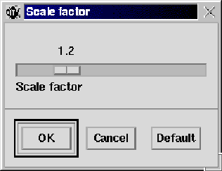 |
The current scale percentage is always visible in the bottom-right
corner of the main window and is updated by the scaling commands.
The scale percentage is the
ratio between the TCM coordinates and the X Window coordinates,
which is 100% when there is no scaling. By making the drawing
larger you make this percentage larger, by making the drawing smaller,
you make percentage smaller.
The scale factor is the factor by which the scale percentage
is increased or decreased during scaling.
The scale percentage and factor are saved to file together with
the document. When the drawing is saved as PostScript, EPSF, Fig or
PNG-format the output is also scaled by the scale percentage.
2.9 The Page Layout
The Page menu commands determine the page layout.
Any change in page layout is directly made visible in the drawing
area. TCM is WYSIWYP, i.e. What You See Is What You Print.
The page layout has effect when plain PostScript is generated
either when the document is printed, previewed or
exported as plain PostScript. The Page menu commands have no effect
on the document when saved as Encapsulated PostScript, as this
format is independent from the page layout by definition.
The Page menu contains the following entries:
-
Show Page Boundary. Draw or hide the page boundary.
The positions of the boundaries are determined by the page
size and the page orientation.
-
Page Orientation. Sets the page orientation
to Portrait (default) or Landscape. When the page boundaries
are shown, you see that the boundaries are repositioned.
This affects the orientation in which the document is printed
or saved as plain PostScript.
-
Page Size. Sets the page size. The current available
sizes are A4 (default, 210x297 mm.), A3 (297x420 mm.),
Letter (8.5x11 inches), Legal (8.5x14 inches) and
Executive (7.5x10 inches). The default
page size can be changed in the TCM configuration file.
-
Include Page Numbers.
This is an option in the Page menu to show page numbers. Page
numbers will be shown and printed when that option is on. Page numbers are
normally displayed at the bottom of the page, but when the
document info is displayed as a footer, page numbers are displayed
at the top of the page.
-
Include Document Info.
This is a toggle menu which makes it possible to show information
about the document in the drawing area and on paper, because this
information will be saved as plain PostScript too. This information
can be added as a header, as a footer or both as a header and a footer.
The information consists of the
document name and type, the creation date and time, the author,
the current tool, the current user and the current date and time.
By issuing the refresh command or by generating PostScript
the information is updated (including the time strings).
As an aside, the user cannot alter this information in the editor,
except the document name.
The page orientation, the page numbering and the inclusion
of document info are saved in a document file. However, the
page size and boundary are are options of the editor not of
the edited document. So when you save a document
the latter options are not saved.
2.10 The Properties Menu
The Properties menu contains commands for performing operations for
updating line and text properties
that cannot be done from within the in-line or out-line editor.
The following commands are available:
- Update Line Style.
This entry pops up a dialog window for choosing a line style.
See figure 2.9. The line styles include solid, dashed,
dotted, dual (i.e. double solid lines), invisible (nothing is drawn) and
wide dotted. In the case of the table editors the dialog window shows an
extra list of radio to indicate which sides of a cell should be updated.
This command is only available in the generic diagram editor (TGD) and
the table editors.
Figure 2.9:
TCM line style chooser dialog.
|
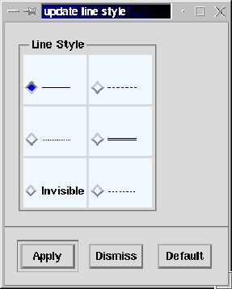 |
- Update Line Width.
This entry pops up a dialog window to set the line width.
See figure 2.10. The default line width is 1 pixel.
When you issue a command to change the line width, each selected
shape or cell is redrawn according to this new line width.
Figure 2.10:
TCM line width dialog.
|
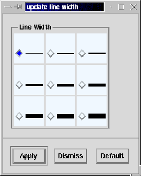 |
- Update Text Font.
This entry pops up a dialog window to update the font family,
the font style and the point size
(figure 2.11).
For each of the three attributes there is a list of toggle buttons.
Also, each list of toggle buttons in the dialog has an extra check
button called update attribute that indicates whether
that font particular attribute should be updated or not.
Note that a shape in a diagram that has more than one text
label cannot have different fonts for the different
text labels.
Figure 2.11:
TCM font chooser dialog.
|
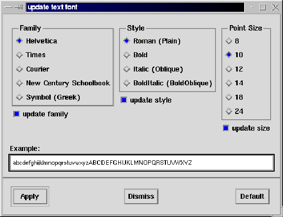 |
The font families include Helvetica (default), Times, Courier, New Century
Schoolbook and Symbol (Greek). The font styles are Roman (default), Bold,
Italic and Bold-Italic. The standard available point sizes are 8, 10 (default),
12, 14, 18 and 24.
When you use Adobe fonts then the X fonts and the corresponding PostScript fonts
look the same.
The fonts of the PostScript output contain the ISO Latin-1 character set.
In TCM_CONFIG/tcm.conf you can see which (types of) fonts are
used for the TCM documents by default. If you wish some other font you can
edit this file (or better, put the options in a personal file $HOME/.tcmrc ).
TCM uses scalable X fonts by default (you see that when you use the Scale
commands). If these fonts are not installed or don't look good for your tastes
then you can tell TCM to work with unscalable fonts by specifying:
{ ScalableFonts False }.
If you wish fonts of a certain foundry, e.g. only Adobe fonts, then
specify that with the following line in TCM_CONFIG/tcm.conf or
$HOME/.tcmrc :
{ FontFoundry Adobe }
If you wish some other font you can
edit this file (or better, put the options in a personal file $HOME/.tcmrc ).
TCM uses scalable X fonts by default (you see that when you use the Scale
commands). If these fonts are not installed or don't look good for your tastes
then you can tell TCM to work with unscalable fonts by specifying:
{ ScalableFonts False }.
If you want additional font sizes on top of the standard font sizes listed above
you can put these in your personal config file $HOME/.tcmrc (preferred) or
add these to the TCM config file TCM_CONFIG/tcm.conf.
If you want e.g. to add Point Size 9 and 11 to the standard sizes,
the following lines should be added:
{ AddPointSize 9 }.
{ AddPointSize 11 }.
- Update Text Alignment.
This entry pops up a dialog window to update existing multi-line
texts.
See figure 2.12.
Each selected shape receives this text alignment.
In table editors there are distinct entries to update the column
alignment and the row alignment.
The text alignments include Left, Center (default) and Right.
Figure 2.12:
TCM text alignment dialog.
|
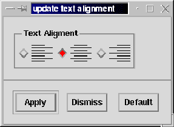 |
- Set/Unset Text Underlining.
This menu option sets/unsets (toggles) the text underlining of the selected
shapes.
- Update Line Color.
This entry shows a selection dialog box to update the line color
(figure 2.13. The scrolled list contains the names
of all available colors. The corresponding color can be previewed
in a colored rectangle under that list. When you click Apply
the line color of each selected shape or cell is updated.
Figure 2.13:
TCM color chooser dialog.
|
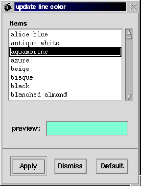 |
- Update Text Color.
This works similar to Update Line Color except that when you
click Apply the colors of the texts are updated.
- Update Fill Color.
The dialog window here shows an extra toggle button to indicate whether
the shape or cell should be filled or not. The chosen color from
the list will be the fill color when the shape or cell is filled.
- Default Properties.
- Default Line Width.
This works similar as Update Line Width. The default line
width is the line width of every new shape or new lines
in a table.
- Default Text Font.
This entry pops up a similar font chooser dialog window as
the Update font entry. The texts of every newly created
shape and the texts of new cells in a table, will get this
default font. Page headers and footers, page numbers and
table row and column labels are also drawn in the default font.
- Default Text Alignment.
This entry pops up a similar dialog window as Update Text Alignment
In the case of table editors there is a distinct Default
Column Alignment and a Default Row Alignment entry. The default column
alignment can either be Left, Center or Right. The row alignment can either
be Top, Center or Bottom.
- Default Line Color.
This works similar to Update Line Color. This is the color of
every newly created shape or the new lines in table.
- Default Text Color.
This works similar to Update Text Color. This is the color of
the text every newly created shape or the text in new cells
in a table.
- Default Fill Color.
This works similar to Update Fill Color. This is the
fill color of every newly created shape or the new lines
in table. The dialog contain a toggle to indicate that
shapes or cell are filled by default or not.
- Node/Edge or Cell Annotation.
Pops up a text edit dialog for giving the selected node/edge
or cell an annotation. This is free text and can for example
contain the description or purpose of the node, edge or cell.
See section 2.12 for advanced text edit operations
on annotations.
2.11 The Search Menu
The Search menu contains commands for performing find and replace
operations on text that cannot be done from within the in-line or
out-line editor.
The following commands are available:
- Find.
Pops up a find dialog like the Find text operation presented in
section 2.5.3. The find dialog looks like
figure 2.6, except that the find dialog from the
Search menu has an extra check button named substring.
When this option is set, this indicates that the text to find
should not match the entire shape label or cell text but only a
substring. Find substring is the default.
When the Find string is an empty string then it matches only
with empty labels.
- Replace.
Pops up a replace dialog like the Replace text operation presented in
section 2.5. The replace dialog looks like
figure 2.7, except that the replace dialog from the
Search menu has an extra check button named substring. This indicates
that the text to find should match only a substring of the entire
shape label or cell text. Replace substring is the default.
The string to find and the string to replace with can be empty
but not both at the same time.
2.12 Checking and Annotating Documents
The Document menu contains the following entries.
- Document Info.
Pops up a text view dialog that contains some information about the
tool and the document that is being edited.
The following information about the current tool session is given:
- Tool name and version.
- File format version. This is the file format that the tool
generates. The tools are supposed to read all file format versions
less than or equal to that version. When TCM encounters a never file
format version it will attempt to read it in, but success is not
guaranteed. You better upgrade to a newer version then.
- The Unix login name of the user running this editor.
- The current date and time.
- The project (working) directory.
- How many changes (in terms of how many edit operations)
were made to the current document after it was created or read in.
It shows the following information about the document being edited:
- Document type.
- Document name.
- Unix login name of the author.
This is the login of the user that created the document.
- Date and time of creation.
If the document was read from a file, it also shows:
- Unix file name from which the document was loaded.
- The file format version found in that file.
- Tool that wrote the file.
- Date and time when the file was written by the tool.
Except the current document name, none of these values can be changed
from within the tool. Note that by default the name of the document
is equal to the file name when it is saved. When a document
file is loaded and it contains a document name that is different
from the file name (because the file had been renamed),
a question dialog is raised which gives the user the choice
between these two names for the new document name.
- Document Source.
Pops up a text view dialog that contains the source
of the document file as being loaded last time from disk.
All text editor options as described earlier are available here.
Advanced users of TCM may hack the file directly if they want to,
but do not expect intelligible feedback if you make a mistake.
For making the changes take effect, save the contents
of the dialog back to file and then (re)load the document via
the File menu.
Please take a look at appendix C for a detailed
specification and explanation of the TCM file format.
-
Document Annotation. Pops up a text edit dialog for giving
the document an annotation. This is free text and can for example
contain the description or purpose of the document, the history
of the document or references to other documents. The annotation text
can be loaded from an ASCII file, saved to an ASCII file and printed
(as Postscript). Furthermore, it is possible to Cut or Copy (a part
of) the text to the Motif clipboard and it is possible to paste the
text from the clipboard in another text edit window. So for example,
when you want to add annotation text as a comment to a diagram, you can
select the text by dragging with mouse button-1 (the selected text
is shown in reverse video) and copy the text from the annotation
text edit dialog to the clipboard. Then you open the out-line editor of
the comment node (the in-line editor toggle should be off),
and you choose Paste from the Edit menu of the out-line editor,
the text is pasted from the clipboard into that window.
When you press the OK button of the out-line editor,
the text appears as a comment node.
-
Check Document Syntax. Shows the result of the checks for
soft constraints (constraints that can be temporarily
violated) in a text view dialog. You should correct the errors yourself.
The checks are specific for the document type involved, so check
out the section in this manual where that type of document is
explained. For an example of the result of checking an
erroneous data flow diagram see figure 2.14.
Figure 2.14:
The result of check document on a DFD.
|
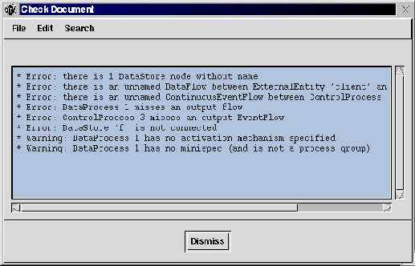 |
-
The Hierarchic Document toggle.
Turns Hierarchic Document on or off. Hierarchic Document means that
nodes in this document can be hierarchically related.
This toggle is only relevant for hierarchic editors
(most diagram editors allow hierarchic documents).
It also (re)sets its counterpart toggle in the main window.
Both Document Info as Check Document use a
text view dialog
which resembles a text edit dialog except that the text is
read-only. So you cannot edit the text (also including Cut, Replace and Paste)
and you cannot load text from file. It further works pretty much
the same as a text edit dialog. Text view dialogs are also used
for the on-line help.
2.13 On-line Help
The on-line help is kept as simple as possible, because it
is possible to read this user manual as HTML document,
including hyper-links and with an index and a table of contents.
It is not our intention to duplicate everything in the
form of on-line help built-in in the editors. There is a collection
of Help menu entries
and each Help menu entry pops up a text view dialog.
The on-line help contains the basic bare minimal that you have
to know to be able to work with the editor. From the on-line help dialog you can save
the text to a file, print it as PostScript or you can copy some
of it to the clipboard. Furthermore, there is a Find command.
The Help menu of the editors contains the following topics:
- Getting Started
advises what you can do best when you start up this tool for
the first time.
- Introduction to Tool
tells something about the software specification technique
that this tool is intended to support.
- Main window
explains the functions of all the components that you see in the main
window.
- Mouse commands
explains what mouse clicks and movements you need to create and
update the document that you want.
- Edit menu commands
explains the function of each command in the edit menu.
- File menu commands
explains loading from file and saving to file.
- Print & Page commands
tells how you can print or export as PostScript, including
how you change the page layout and set the printer options.
- Miscellaneous commands
contains some other things that are worth to mention like fonts,
find and replace, scaling, etc.
- Version
gives the version and the authors of TCM.
- Copying.
TCM 2.0 and higher is being released under the GNU GENERAL PUBLIC
LICENSE.
See http://www.gnu.org
and question B.11 in the FAQ.
- Change Log.
Show the change log, i.e. the differences between the consecutive
versions of TCM.
Next: 3. Diagram Editing
Up: Toolkit for Conceptual Modeling
Previous: 1. Introduction
Henk van de Zandschulp
2003-01-20
![\includegraphics[width=3.5in]{p/loaddialog.ps}](usersguideimg9.gif)